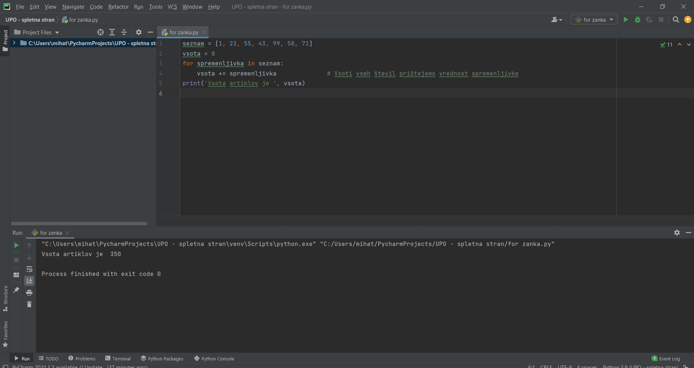
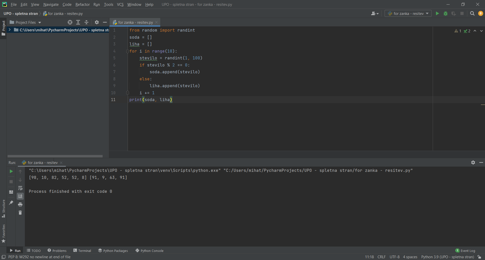

Za konec spoznajmo še for zanko. Ta se od while zanke razlikuje po tem, da ne potrebuje t.i. števca oz. spremenljivke, ki bi narekovala število ponovitev zanke, temveč se 'sprehaja' po npr. seznamih, nizih, številih, terkah, itd. Vsakič se pod spremenljivko, ki jo določimo na začetku for zanke skriva druga vrednost. Tako si lahko pomagamo tudi, če želimo s posameznim elementom opraviti kakšno dejanje oz. imajo kakšno vlogo pri delovanju programa. Da bi to lažje razumeli si poglejmo primer.
Na sliki imamo podan seznam s števili. Naša želja je, da jih seštejemo. Za pomoč se poslužimo ravno for zanke in sicer tako, da pred for zanko določimo spremenljivko imenovano vsota, ki bo predstavljala vsoto števil. S for zanko se nato 'sprehodimo' preko seznama in na vsakem 'koraku' torej vsakič, ko se izvede zanka iz seznama izberemo eno število in ga shranimo pod spremenljivko imenovano spremenljivka. Nato se po vrsti sprehodimo čez celoten seznam in vsako število prištejemo dosedanji vsoti. Zanka se konča, ko se sprehodimo čez celoten seznam, zato tudi ne potrebujemo t.i. števca.
Naključno izbranih 10 števil morate razdeliti v 2 skupine in sicer vsa soda in vsa liha številaskupaj.
Rešitev:
Na sliki rešitve je nekaj novosti. Znak za odstotek (%) predstavlja ostanek pri celoštevilskem deljenju, znak == pa je enako (ker je = že zaseden s prirejanjem spremenljivk). Iz knjižnice random smo poklicali randint, ki naključno izbere število med zgornjo in spodnjo mejo 2 števil v oklepaju. Seznamu dodajamo elemente tako, da napišemo ime seznamaa, nato dodamo piko in append (.append) terv oklepaju element, ki ga želimo dodati v seznam.
Zaključili ste z vsemi nalogami. Čestitam za dosežek in iskreno upam, da ste kaj odnessli. Želim vam veselo programiranje.